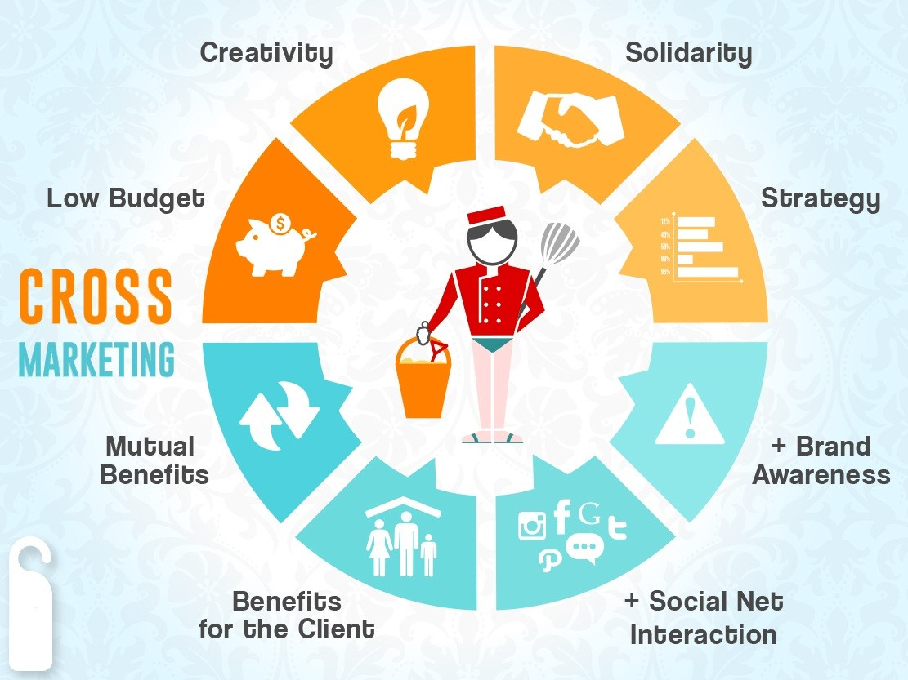
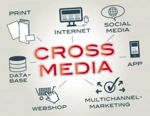

📋 PAGE 1
CONCEPT OF
CROSS-MEDIA CAMPAIGN
A marketing strategy that delivers a consistent message across multiple platforms.
It combines different media channels for unified messaging.
CHANNELS USED
social media
TV
radio
print
outdoor
digital display
podcast
direct mail
CROSS-MEDIA CAMPAIGN
unified · consistent · cross-channel storytelling
📋 PAGE 2
- 1. Planning
- 2. Audience Targeting
- 3. Message Creation
- 4. Multi-Channel Promotion
- 5. Analysis and Feedback
📋 PAGE 3
1. Importance


Benefit
- Consistent Branding
- Enhanced Customer Experience
- Improved Customer Understanding
- Increased Engagement and Conversion
- Efficient Resource Utilisation
📋 PAGE 4

visual asset – full page
⚡ cross-media campaign concept · reconstructed from PDF outline · image placeholders removed